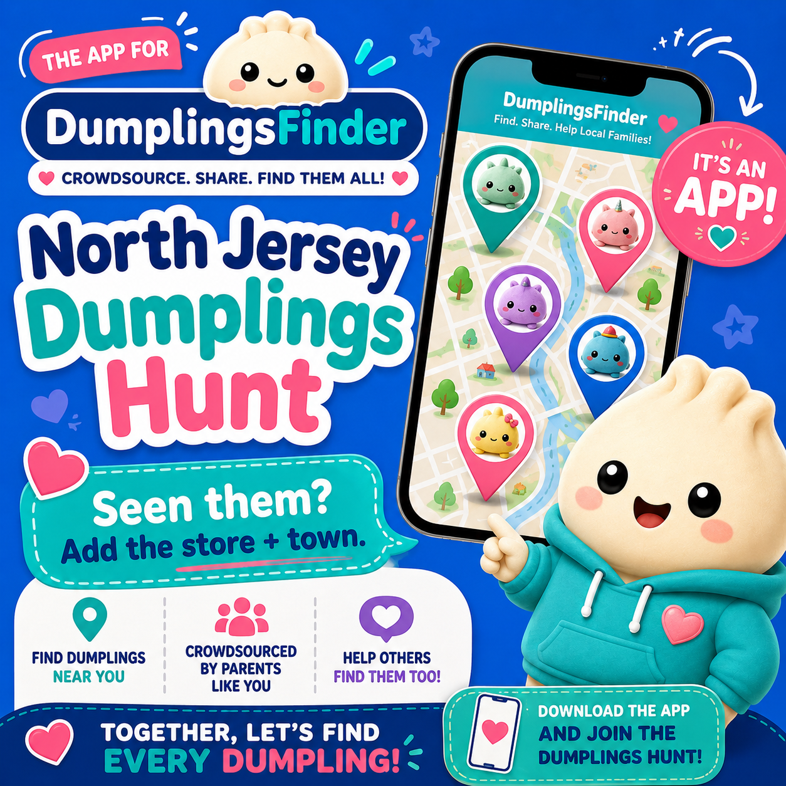

North Jersey Dumplings Hunt
Download DumplingsFinder to check local shopper-reported sightings and add the store + town when you find Dumplings.
Shopper-reported sightings. Availability is never guaranteed. DumplingsFinder is not affiliated with any store or brand.

Check the map
See shopper-reported Dumplings sightings before driving around.
Add store + town
When you find them, add the useful local details other families need.
Help the hunt
The more people who use it, the better the map gets for everyone.